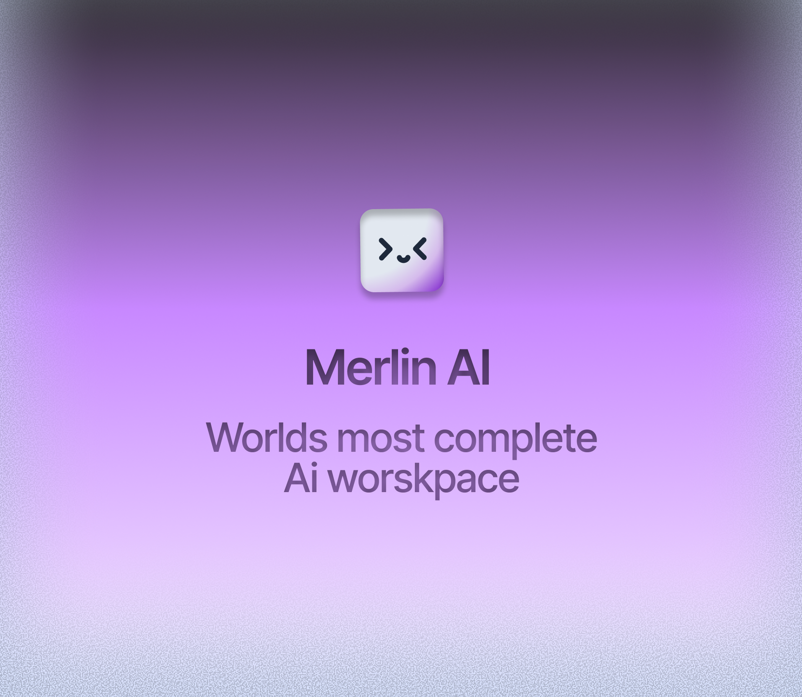
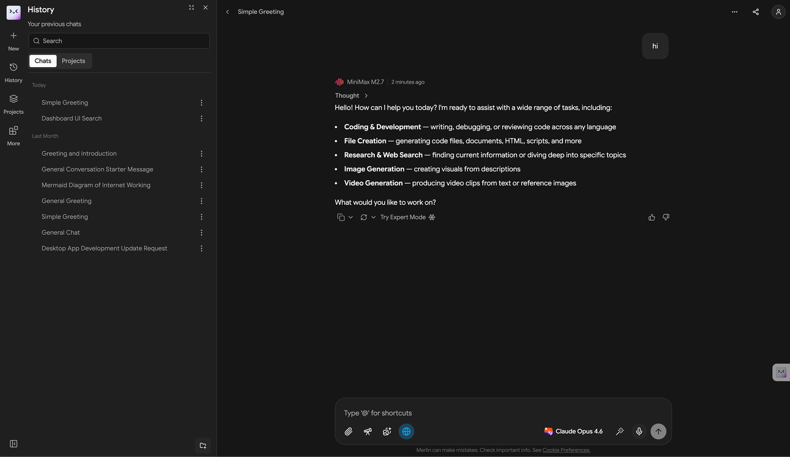

A native macOS app that routes every task to the most cost-effective model, so coding, research, writing, and automation don't spend a premium model on routine work.

The decision in Merlin Agent is where a task goes. Most AI subscriptions spend a premium model on every request, including the simple ones. This is a native macOS app that routes each task to whichever model is actually cost-effective. Simple tasks run on efficient models. Complex ones get the premium model, and only then.
What Claude Code does for developers, Merlin Agent does for everyone else who works. One app stands in for the coding assistant, the writing tool, the image generator, and the research subscription. It reads and writes files on the Mac, with no upload, and connects to the apps already in use: Gmail, Calendar, Docs, Sheets, Notion, and Slack.
Merlin is already in use across web, extension, and desktop: 20M+ people, rated 4.8 by those who use it daily. At $10 a month, the desktop plan stands in for a stack that would otherwise run $45 a month across tools like Claude Code, ChatGPT, Perplexity, and Bolt. That is about $420 a year for one person doing ordinary AI work.
Professionals at Zoom, Netflix, Sony, Uber, Pinterest, Walmart, eBay, and Cisco already run their AI work through Merlin.
Right model, lower cost. Merlin auto-routes tasks to the most cost-effective model available, saving premium models for the moments that actually need them.
Fewer AI subscriptions. One desktop app handles coding, content, documents, images, video, and data analysis, replacing five or six separate tools.
Local file access. Merlin reads and writes files directly on your Mac—PDFs, code, spreadsheets—without uploading them to a third-party server first.
Connected apps. Native integrations with Gmail, Calendar, Docs, Sheets, Notion, and more let Merlin act on real context, not copy-pasted snippets.
Skills and plugins. A built-in library: code review, debugging, archive inspection, email parsing, diagram generation, plus the ability to create and upload custom skills.

Researchers drop a folder of PDFs on a Friday afternoon. Merlin reads every one, pulls the findings, and hands back a brief before they leave.
Developers debug, refactor, and ship without burning budget on the wrong model. Merlin runs the commands and verifies its own work.
Marketers point Merlin at a folder of assets and a deadline. It returns the copy, the images, and the campaign in a single pass.
Students bring their own notes and textbooks. Merlin works with the files already on the Mac, no uploading, no new workflow to learn.
Merlin Agent runs natively on macOS 12 Monterey and later, on Apple Silicon (M1 and newer). It needs an internet connection only for the model calls themselves—everything else: file reading, local search, workspace context—happens on-device.
Existing Merlin Pro or Max subscribers can switch to the desktop plan in one click, keeping their billing date and paying only the prorated difference.
As models get cheaper and more alike, the difference is no longer which model you pick. It is how carefully you spend one. Merlin chooses task by task, and spends a premium model only when the task warrants it.
The point is not another chatbot subscription. It is one place that makes a stack of separate AI subscriptions unnecessary.